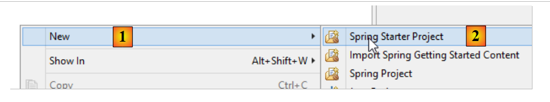
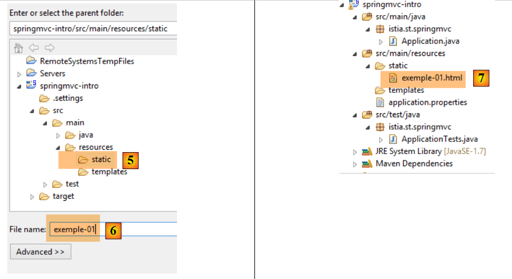
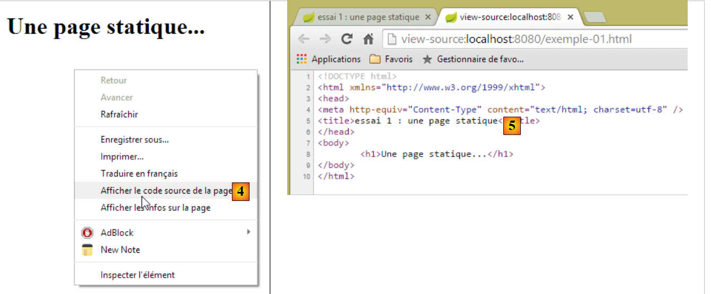
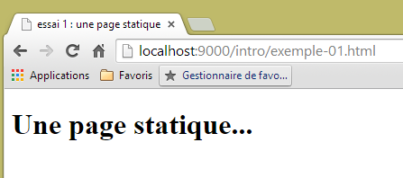
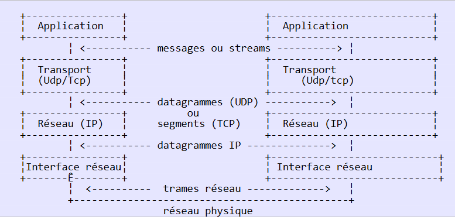
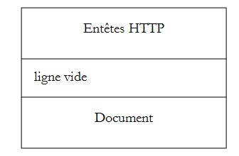
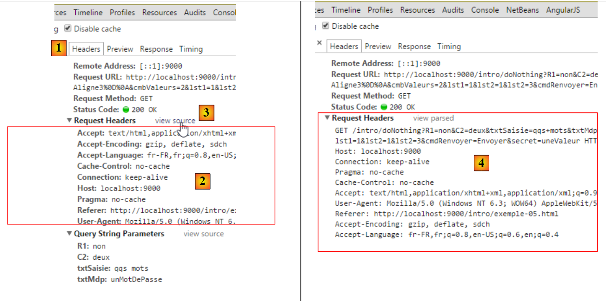
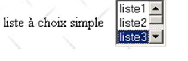

2. أساسيات برمجة الويب
الغرض الأساسي من هذا الفصل هو تقديم المبادئ الأساسية لبرمجة الويب، والتي لا تعتمد على التكنولوجيا المحددة المستخدمة لتنفيذها. ويقدم الفصل العديد من الأمثلة التي ننصحك بتجربتها من أجل "استيعاب" فلسفة تطوير الويب تدريجيًا. يمكن للقراء الذين يمتلكون هذه المعرفة بالفعل الانتقال مباشرة إلى الفصل 3.
مكونات تطبيق الويب هي كما يلي:

الرقم | الدور | أمثلة شائعة |
1 | نظام تشغيل الخادم | Unix، Linux، Windows |
2 | خادم الويب | أباتشي (يونكس، لينكس، ويندوز) IIS (ويندوز + منصة .NET) Node.js (Unix، Linux، Windows) |
3 | كود جانب الخادم. يمكن تنفيذه بواسطة وحدات الخادم أو بواسطة برامج خارجية (CGI). | JAVASCRIPT (Node.js) PHP (Apache، IIS) JAVA (Tomcat، WebSphere، JBoss، WebLogic، ...) C#، VB.NET (IIS) |
4 | قاعدة البيانات - يمكن أن تكون على نفس الجهاز الذي يستخدمها البرنامج أو على جهاز آخر عبر الإنترنت. | Oracle (Linux، Windows) MySQL (Linux، Windows) Postgres (Linux، Windows) SQL Server (ويندوز) |
5 | نظام تشغيل العميل | Unix، Linux، Windows |
6 | متصفح الويب | Chrome، Internet Explorer، Firefox، Opera، Safari، ... |
7 | نصوص برمجية من جانب العميل يتم تنفيذها داخل المتصفح. لا يمكن لهذه النصوص البرمجية الوصول إلى قرص جهاز العميل. | جافا سكريبت (جميع المتصفحات) |
2.1. تبادل البيانات في تطبيق ويب باستخدام نموذج

الرقم | الدور |
1 | يطلب المتصفح عنوان URL لأول مرة (http://machine/url). لا يتم تمرير أي معلمات. |
2 | يرسل خادم الويب صفحة الويب الخاصة بعنوان URL هذا. قد تكون هذه الصفحة ثابتة أو تم إنشاؤها ديناميكيًا بواسطة برنامج نصي من جانب الخادم (SA) قد يكون استخدم محتوى من قواعد البيانات (SB، SC). هنا، سيكتشف البرنامج النصي أن عنوان URL قد طُلب بدون أي معلمات وسيقوم بإنشاء صفحة الويب الأولية. يتلقى المتصفح الصفحة ويعرضها (CA). قد تكون البرامج النصية من جانب المتصفح (CB) قد عدلت الصفحة الأولية التي أرسلها الخادم. بعد ذلك، من خلال التفاعلات بين المستخدم (CD) والبرامج النصية (CB)، سيتم تعديل صفحة الويب. على وجه الخصوص، سيتم ملء النماذج. |
3 | يقوم المستخدم بإرسال بيانات النموذج، والتي يجب إرسالها بعد ذلك إلى خادم الويب. يطلب المتصفح عنوان URL الأولي أو عنوانًا آخر، حسب الاقتضاء، ويقوم في الوقت نفسه بنقل قيم النموذج إلى الخادم. ويمكنه استخدام طريقتين لهذا الغرض: GET و POST. عند استلام طلب العميل، يقوم خادم بتشغيل البرنامج النصي (SA) المرتبط بعنوان URL المطلوب، والذي سيكتشف المعلمات ويعالجها. |
4 | يقوم الخادم بتسليم صفحة الويب التي تم إنشاؤها بواسطة البرنامج (SA، SB، SC). هذه الخطوة مطابقة للخطوة 2 السابقة. ويستمر الاتصال الآن وفقًا للخطوتين 2 و 3. |
2.2. صفحات الويب الثابتة، صفحات الويب الديناميكية
يتم تمثيل الصفحة الثابتة بملف HTML. أما الصفحة الديناميكية فهي صفحة HTML يتم إنشاؤها "على الفور" بواسطة خادم الويب.
2.2.1. صفحة HTML (لغة ترميز النص التشعبي) ثابتة
لنقم بإنشاء مشروع Spring MVC الأول لنا [1-2]:
 |
- في [1-2]، نقوم بإنشاء مشروع جديد يعتمد على Spring Boot [http://projects.spring.io/spring-boot/]؛
 |
- المعلومات [3-7] مخصصة لتكوين Maven الخاص بالمشروع؛
- في [3]، اسم مشروع Maven؛
- في [4]، مجموعة Maven التي سيتم وضع ناتج تجميع المشروع فيها؛
- في [5]، الاسم الممنوح لمخرجات التجميع؛
- في [6]، وصف للمشروع؛
- في [7]، الحزمة التي سيتم وضع فئة المشروع القابلة للتنفيذ فيها؛
- في [8]، طبيعة المشروع. هذا مشروع ويب مع طرق عرض Thymeleaf. هنا، نرى جميع تبعيات Maven الجاهزة للاستخدام التي يوفرها مشروع Spring Boot؛
- في [9]، نحدد أن ناتج بناء Maven سيتم تجميعه في أرشيف JAR بدلاً من WAR. سيستخدم المشروع بعد ذلك خادم Tomcat مدمج، والذي سيتم تضمينه في تبعياته؛
- في [10]، ننتقل إلى الخطوة التالية من المعالج؛
 |
- في [11]، نحدد دليل المشروع؛
- في [12]، ننهي المعالج؛
- في [13]، المشروع الذي تم إنشاؤه.
دعونا نفحص ملف [pom.xml] الذي تم إنشاؤه:
<?xml version="1.0" encoding="UTF-8"?>
<project xmlns="http://maven.apache.org/POM/4.0.0" xmlns:xsi="http://www.w3.org/2001/XMLSchema-instance"
xsi:schemaLocation="http://maven.apache.org/POM/4.0.0 http://maven.apache.org/xsd/maven-4.0.0.xsd">
<modelVersion>4.0.0</modelVersion>
<groupId>istia.st.springmvc</groupId>
<artifactId>intro</artifactId>
<version>0.0.1-SNAPSHOT</version>
<packaging>jar</packaging>
<name>springmvc-intro</name>
<description>Les bases de la programmation web</description>
<parent>
<groupId>org.springframework.boot</groupId>
<artifactId>spring-boot-starter-parent</artifactId>
<version>1.1.9.RELEASE</version>
<relativePath /> <!-- lookup parent from repository -->
</parent>
<dependencies>
<dependency>
<groupId>org.springframework.boot</groupId>
<artifactId>spring-boot-starter-web</artifactId>
</dependency>
<dependency>
<groupId>org.springframework.boot</groupId>
<artifactId>spring-boot-starter-test</artifactId>
<scope>test</scope>
</dependency>
</dependencies>
<properties>
<project.build.sourceEncoding>UTF-8</project.build.sourceEncoding>
<start-class>istia.st.springmvc.Application</start-class>
<java.version>1.7</java.version>
</properties>
<build>
<plugins>
<plugin>
<groupId>org.springframework.boot</groupId>
<artifactId>spring-boot-maven-plugin</artifactId>
</plugin>
</plugins>
</build>
</project>
وهو يتضمن جميع المعلومات التي تم توفيرها في المعالج. في الأسطر 26–30، نجد تبعيات لم نكن على علم بها. وهي تتيح تكامل اختبارات الوحدة JUnit مع Spring.
لنبدأ بإنشاء صفحة HTML ثابتة في هذا المشروع. بشكل افتراضي، يجب وضعها في المجلد [src/main/resources/static]:
 |
- في [1-4]، قم بإنشاء ملف HTML في المجلد [static]؛
 |
- في [6]، قم بتسمية الصفحة؛
- في [7]، تمت إضافة الصفحة.
محتوى الصفحة التي تم إنشاؤها هو كما يلي:
<!DOCTYPE html>
<html>
<head>
<meta charset="ISO-8859-1">
<title>Insert title here</title>
</head>
<body>
</body>
</html>
- الأسطر 2-10: يتم تحديد الكود بواسطة العلامة الجذرية <html>؛
- الأسطر 3-6: تحدد العلامة <head> ما يُسمى برأس الصفحة؛
- الأسطر 7-9: تحدد العلامة <body> ما يُسمى نص الصفحة.
دعونا نعدل هذا الكود على النحو التالي:
<!DOCTYPE html>
<html xmlns="http://www.w3.org/1999/xhtml">
<head>
<meta http-equiv="Content-Type" content="text/html; charset=utf-8" />
<title>essai 1 : une page statique</title>
</head>
<body>
<h1>Une page statique...</h1>
</body>
</html>
- السطر 5: يحدد عنوان الصفحة – سيُعرض كعنوان نافذة المتصفح التي تعرض الصفحة؛
- السطر 8: نص بخط كبير (<h1>).
دعونا نشغل التطبيق [1-3]:
 |
ثم، باستخدام متصفح، لنطلب عنوان URL [http://localhost:8080/exemple-01.html]:
 |
- في [1]، عنوان URL للصفحة المعروضة؛
- في [2]، عنوان النافذة – المقدم بواسطة علامة <title> الخاصة بالصفحة؛
- في [3]، نص الصفحة – تم توفيره بواسطة علامة <h1>.
لنلقِ نظرة على [4-5] كود HTML الذي استلمه المتصفح:
 |
- في [5]، تلقى المتصفح صفحة HTML التي أنشأناها. وقام بتفسيرها وعرضها في شكل رسومي.
2.2.2. صفحة Thymeleaf ديناميكية
الآن دعونا ننشئ صفحة Thymeleaf. إنها صفحة HTML قياسية تحتوي على علامات مُثريّة بسمات [Thymeleaf] [http://www.thymeleaf.org/]. نتبع عملية مشابهة لتلك المتبعة في إنشاء صفحة HTML، ولكن هذه المرة يجب وضع صفحة HTML الجديدة في مجلد [templates]:
 |
ستبدو صفحة [example-02.html] كما يلي:
<!DOCTYPE HTML>
<html xmlns:th="http://www.thymeleaf.org">
<head>
<title>spring mvc intro</title>
<meta http-equiv="Content-Type" content="text/html; charset=UTF-8" />
</head>
<body>
<p th:text="'Il est ' + ${heure}">Voici l'heure</p>
</body>
</html>
- السطر 8: العلامة <p> هي علامة HTML تُدرج فقرة في الصفحة المعروضة. [th:text] هي سمة [Thymeleaf] لها غرضان مختلفان اعتمادًا على ما إذا كان [Thymeleaf] نشطًا أم لا:
- إذا لم يقم [Thymeleaf] بتحليل صفحة HTML، فسيتم تجاهل السمة [th:text] لأنها غير معروفة في HTML. وسيكون النص المعروض عندئذٍ [Here is the time]،
- إذا قام [Thymeleaf] بتفسير صفحة HTML، فسيتم تقييم السمة [th:text] وستحل قيمتها محل النص [Here is the time]. وستكون قيمتها شيئًا مثل [It is 17:11:06]؛
لنرى كيف يعمل ذلك عمليًا. سنقوم بنسخ الصفحة [templates/example-02.html] إلى المجلد [static]. لا يقوم [Thymeleaf] بتفسير صفحات HTML الموضوعة في هذا المجلد:
 |  |  |
نقوم بتشغيل التطبيق كما فعلنا عدة مرات من قبل، ثم نطلب عنوان URL [http://localhost:8080/exemple-02.html] في متصفح:
 |
نلاحظ في [1] أن السمة [th:text] لم يتم تفسيرها ولم تتسبب في حدوث خطأ أيضًا. ويُظهر كود المصدر للصفحة المعروضة في [2] أن المتصفح قد تلقى الصفحة بالكامل بنجاح.
لنعد إلى صفحة [example-02.html] الموجودة في مجلد [templates]:
 |
تتم معالجة صفحات HTML الموجودة في مجلد [templates] بواسطة [Thymeleaf]. لنعد إلى كود الصفحة:
<!DOCTYPE HTML>
<html xmlns:th="http://www.thymeleaf.org">
<head>
<title>spring mvc intro</title>
<meta http-equiv="Content-Type" content="text/html; charset=UTF-8" />
</head>
<body>
<p th:text="'Il est ' + ${heure}">Voici l'heure</p>
</body>
</html>
- السطر 7: سيقوم [Thymeleaf] بتفسير السمة [th:text] واستبدال [ها هي الساعة] بقيمة التعبير:
يستخدم هذا التعبير المتغير [${time}]، حيث ينتمي [time] إلى قالب العرض [example-02.html]. لذلك نحتاج إلى إنشاء هذا القالب. للقيام بذلك، سنتبع المثال الذي تمت مناقشته في القسم 1.6. نقوم بتحديث المشروع على النحو التالي:
 |
في [1]، نضيف وحدة التحكم التالية:
package istia.st.springmvc;
import java.text.SimpleDateFormat;
import java.util.Date;
import org.springframework.stereotype.Controller;
import org.springframework.ui.Model;
import org.springframework.web.bind.annotation.RequestMapping;
@Controller
public class MyController {
@RequestMapping("/")
public String heure(Model model) {
// time format
SimpleDateFormat formater = new SimpleDateFormat("HH:MM:ss");
// the hour of the moment
String heure = formater.format(new Date());
// set the time in the view model
model.addAttribute("heure", heure);
// display the [exemple-02.html] view
return "exemple-02";
}
}
- السطران 13-14: تعالج طريقة [time] عنوان URL [/]؛
- السطر 14: [Model model] هو نموذج فارغ. يجب أن تملأه الإجراء [time] بالسمات التي تريد رؤيتها في النموذج. نعلم أن العرض [example-02.html] يتوقع سمة باسم [time]؛
- الأسطر 19-22: تنفيذ ما شرحناه للتو. سيتم عرض العرض [example-02.html] (السطر 22) مع سمة باسم [time] في نموذجه (السطر 20)؛
- السطر 16: يتم إنشاء مُنسق للتاريخ. التنسيق [HH:MM:ss] المستخدم هو تنسيق [ساعات:دقائق:ثوانٍ] حيث تتراوح الساعات بين [0-24]؛
- السطر 18: باستخدام أداة التنسيق هذه، نقوم بتنسيق تاريخ اليوم؛
- السطر 20: يتم تعيين الوقت الناتج إلى سمة باسم [time]؛
نقوم بتشغيل التطبيق وطلب عنوان URL [/]:
 |
- [1] يعرض الصفحة الناتجة و[2] محتوى HTML الخاص بها. يمكننا أن نرى أن النص الأولي [Here is the time] قد اختفى تمامًا؛
إذا قمنا الآن بتحديث الصفحة [1] (F5)، فسنحصل على عرض مختلف (وقت جديد) على الرغم من أن عنوان URL لم يتغير. هذا هو الجانب الديناميكي للصفحة: يمكن أن يتغير محتواها بمرور الوقت.
من ما سبق، يمكننا أن نرى الطبيعة المختلفة جذريًا للصفحات الديناميكية والصفحات الثابتة.
2.2.3. تكوين تطبيق Spring Boot
لنعد إلى بنية مشروع Eclipse:
 |
يُستخدم ملف [application.properties] لتكوين تطبيق Spring Boot. في الوقت الحالي، هذا الملف فارغ. يمكن استخدامه لتكوين التطبيق بطرق مختلفة، كما هو موضح في الرابط [http://docs.spring.io/spring-boot/docs/current/reference/html/common-application-properties.html]. سنستخدم ملف [application.properties] التالي [2]:
- السطر 1: يحدد منفذ خدمة تطبيق الويب؛
- السطر 2: يحدد سياق تطبيق الويب؛
مع هذا التكوين، سيكون من الممكن الوصول إلى الصفحة الثابتة [example-01.html] على الرابط [http://localhost:9000/intro/exemple-01.html]:
 |
2.3. البرامج النصية على جانب المتصفح
يمكن أن تحتوي صفحة HTML على نصوص برمجية يتم تنفيذها بواسطة المتصفح. لغة البرمجة النصية الأساسية من جانب المتصفح هي حاليًا (يناير 2015) JavaScript. وقد تم إنشاء مئات المكتبات باستخدام هذه اللغة لتسهيل عمل المطورين.
لنقم بإنشاء صفحة جديدة [example-03.html] في مجلد [static] للمشروع الحالي:
 |
قم بتحرير ملف [example-03.html] بالمحتوى التالي:
<!DOCTYPE html>
<html xmlns="http://www.w3.org/1999/xhtml">
<head>
<meta http-equiv="Content-Type" content="text/html; charset=utf-8" />
<title>exemple Javascript</title>
<script type="text/javascript">
function réagir() {
alert("Vous avez cliqué sur le bouton !");
}
</script>
</head>
<body>
<input type="button" value="Cliquez-moi" onclick="réagir()" />
</body>
</html>
- السطر 13: يحدد زرًا (سمة type) بالنص "انقر عليّ" (سمة value). عند النقر عليه، يتم تنفيذ دالة JavaScript [react] (سمة onclick)؛
- الأسطر 6–10: نص برمجي JavaScript؛
- الأسطر 7–9: دالة [react]؛
- السطر 8: يعرض مربع حوار يحتوي على الرسالة [You clicked the button].
دعونا نعرض الصفحة في متصفح:
 |
- في [1]، الصفحة المعروضة؛
- في [2]، مربع الحوار عند النقر على الزر.
عند النقر على الزر، لا يحدث أي اتصال بالخادم. يتم تنفيذ كود JavaScript بواسطة المتصفح.
مع العدد الهائل من مكتبات JavaScript المتاحة، يمكننا الآن تضمين تطبيقات كاملة مباشرة في المتصفح. وهذا يؤدي إلى البنى التالية:
 |
- 1-2: خادم HTML هو خادم لصفحات HTML5/CSS/JavaScript الثابتة؛
- 3-4: تتفاعل صفحات HTML5/CSS/JavaScript التي يتم تسليمها مباشرة مع خادم البيانات. يقوم خادم البيانات بتسليم البيانات بدون ترميز HTML. يقوم JavaScript بإدراج هذه البيانات في صفحات HTML الموجودة بالفعل في المتصفح.
في هذه البنية، قد يصبح كود جافا سكريبت معقدًا. ولذلك، نسعى إلى تنظيمه في طبقات، كما نفعل مع الكود الخاص بجانب الخادم:
 |
- طبقة [UI] هي التي تتفاعل مع المستخدم؛
- طبقة [DAO] تتفاعل مع خادم البيانات؛
- تحتوي طبقة [الأعمال] على إجراءات الأعمال التي لا تتفاعل لا مع المستخدم ولا مع خادم البيانات. قد لا تكون هذه الطبقة موجودة.
2.4. الاتصال بين العميل والخادم
لنعد إلى الرسم التخطيطي الأولي الذي يوضح مكونات تطبيق الويب:

هنا، نحن مهتمون بالتبادلات بين جهاز العميل وجهاز الخادم. تحدث هذه التبادلات عبر شبكة، ومن الجدير مراجعة الهيكل العام للتبادلات بين جهازين بعيدين.
2.4.1. نموذج OSI
يصف نموذج الشبكة المفتوحة المعروف باسم OSI (نموذج مرجعي لربط الأنظمة المفتوحة)، الذي حددته منظمة ISO (منظمة المعايير الدولية)، شبكة مثالية حيث يمكن تمثيل الاتصال بين الأجهزة بنموذج مكون من سبع طبقات:
 |
تتلقى كل طبقة خدمات من الطبقة التي تحتها وتقدم خدماتها الخاصة إلى الطبقة التي فوقها. لنفترض أن تطبيقين موجودين على جهازين مختلفين A و B يريدان التواصل: يفعلان ذلك في طبقة التطبيقات. لا يحتاجان إلى معرفة كل تفاصيل كيفية عمل الشبكة: يمرر كل تطبيق المعلومات التي يرغب في إرسالها إلى الطبقة التي تحتها: طبقة العرض. وبالتالي، لا يحتاج التطبيق سوى إلى معرفة قواعد التفاعل مع طبقة العرض. وبمجرد وصول المعلومات إلى طبقة العرض، يتم تمريرها وفقًا لقواعد أخرى إلى طبقة الجلسة، وهكذا دواليك، حتى تصل المعلومات إلى الوسيط المادي ويتم إرسالها فعليًا إلى الجهاز الوجهة. وهناك، ستخضع لعملية عكسية لما خضعت له على الجهاز المرسل.
في كل طبقة، تقوم عملية الإرسال المسؤولة عن إرسال المعلومات بإرسالها إلى عملية استقبال على الجهاز الآخر الذي ينتمي إلى نفس الطبقة التي تنتمي إليها. وتقوم بذلك وفقًا لقواعد معينة تُعرف باسم بروتوكول الطبقة. وبالتالي، نحصل على مخطط الاتصال النهائي التالي:
 |
فيما يلي أدوار الطبقات المختلفة:
الطبقة المادية | تضمن نقل البتات عبر وسيط مادي. تشمل هذه الطبقة معدات طرفية لمعالجة البيانات (DPTE) مثل المحطات الطرفية أو أجهزة الكمبيوتر، بالإضافة إلى معدات إنهاء دوائر البيانات (DCTE) مثل أجهزة التضمين/التفكيك، وأجهزة التعدد، والمركّزات. الاعتبارات الرئيسية في هذا المستوى هي:
|
وصلة البيانات | يخفي الخصائص المادية للطبقة المادية. يكتشف أخطاء الإرسال ويصححها. |
الشبكة | تدير المسار الذي يجب أن تتبعه المعلومات المرسلة عبر الشبكة. وهذا ما يُسمى بالتوجيه: تحديد المسار الذي يجب أن تسلكه المعلومات للوصول إلى وجهتها. |
النقل | تتيح الاتصال بين تطبيقين، في حين أن الطبقات السابقة كانت تسمح فقط بالاتصال بين الأجهزة. يمكن أن تكون إحدى الخدمات التي توفرها هذه الطبقة هي تعدد الإرسال: يمكن لطبقة النقل استخدام اتصال شبكة واحد (من جهاز إلى جهاز) لنقل البيانات الخاصة بتطبيقات متعددة. |
الجلسة | توفر هذه الطبقة خدمات تسمح للتطبيق بفتح جلسة عمل والحفاظ عليها على جهاز بعيد. |
طبقة العرض | تهدف هذه الطبقة إلى توحيد عرض البيانات عبر أجهزة مختلفة. وبالتالي، سيتم "تنسيق" البيانات الصادرة من الجهاز A بواسطة طبقة العرض الخاصة بالجهاز A وفقًا لتنسيق قياسي قبل إرسالها عبر الشبكة. وعند وصولها إلى طبقة العرض الخاصة بالجهاز B الوجهة، والذي سيتعرف عليها بفضل تنسيقها القياسي، سيتم تنسيقها بشكل مختلف حتى يتمكن التطبيق الموجود على الجهاز B من التعرف عليها. |
التطبيق | في هذا المستوى، نجد التطبيقات التي تكون قريبة بشكل عام من المستخدم، مثل البريد الإلكتروني أو نقل الملفات. |
2.4.2. نموذج TCP/IP
نموذج OSI هو نموذج مثالي. تقترب مجموعة بروتوكولات TCP/IP منه بالطريقة التالية:
 |
- تؤدي واجهة الشبكة (بطاقة الشبكة في الكمبيوتر) وظائف الطبقتين 1 و 2 من نموذج OSI
- تؤدي طبقة IP (بروتوكول الإنترنت) وظائف الطبقة 3 (الشبكة)
- تقوم طبقة TCP (بروتوكول التحكم في الإرسال) أو UDP (بروتوكول مخطط بيانات المستخدم) بأداء وظائف الطبقة الرابعة (النقل). يضمن بروتوكول TCP وصول حزم البيانات المتبادلة بين أجهزة إلى وجهتها. وإذا لم تصل، فإنه يعيد إرسال الحزم المفقودة. لا يؤدي بروتوكول UDP هذه المهمة، لذا فإن الأمر متروك لمطور التطبيق للقيام بذلك. ولهذا السبب، على الإنترنت — التي ليست شبكة موثوقة بنسبة 100٪ — يُعد بروتوكول TCP هو الأكثر استخدامًا. ويُشار إلى ذلك باسم شبكة TCP-IP.
- تشمل طبقة التطبيق وظائف الطبقات من 5 إلى 7 في نموذج OSI.
تقع تطبيقات الويب في طبقة التطبيقات، وبالتالي تعتمد على بروتوكولات TCP/IP. تتبادل طبقات التطبيقات في أجهزة العميل والخادم الرسائل، التي تُعهد بها إلى الطبقات من 1 إلى 4 من النموذج لتوجيهها إلى وجهتها. للتواصل مع بعضها البعض، يجب أن "تتحدث" طبقات التطبيقات في كلا الجهازين نفس اللغة أو البروتوكول. يُطلق على البروتوكول الذي تستخدمه تطبيقات الويب اسم HTTP (بروتوكول نقل النص التشعبي). وهو بروتوكول نصي، مما يعني أن الأجهزة تتبادل أسطرًا من النص عبر الشبكة للتواصل. هذه التبادلات موحدة، مما يعني أن العميل لديه مجموعة من الرسائل لإخبار الخادم بالضبط بما يريده، وأن الخادم لديه أيضًا مجموعة من الرسائل لتزويد العميل برده. يتخذ تبادل الرسائل هذا الشكل التالي:

العميل --> الخادم
عندما يرسل العميل طلبًا إلى خادم الويب، فإنه يرسل
- أسطر نصية بتنسيق HTTP للإشارة إلى ما يريده؛
- سطر فارغ؛
- وثيقة اختيارية.
الخادم --> العميل
عندما يستجيب الخادم للعميل، فإنه يرسل
- أسطر نصية بتنسيق HTTP للإشارة إلى ما يرسله؛
- سطر فارغ؛
- وثيقة اختيارية.
وبالتالي، تتبع عمليات التبادل نفس التنسيق في كلا الاتجاهين. في كلتا الحالتين، يمكن إرسال مستند، على الرغم من أنه من النادر أن يرسل العميل مستندًا إلى الخادم. لكن بروتوكول HTTP يسمح بذلك. وهذا ما يمكّن، على سبيل المثال، مشتركي مزود خدمة الإنترنت من تحميل مستندات متنوعة إلى موقعهم الشخصي الذي يستضيفه ذلك المزود. يمكن أن تكون المستندات المتبادلة من أي نوع. لنفترض أن متصفحًا يطلب صفحة ويب تحتوي على صور:
- يتصل المتصفح بخادم الويب ويطلب الصفحة التي يريدها. يتم تحديد الموارد المطلوبة بشكل فريد بواسطة عناوين URL (محددات مواقع الموارد الموحدة). يرسل المتصفح رؤوس HTTP فقط ولا يرسل أي مستند.
- يستجيب الخادم. يرسل أولاً رؤوس HTTP تشير إلى نوع الاستجابة التي يرسلها. قد يكون هذا خطأً إذا كانت الصفحة المطلوبة غير موجودة. إذا كانت الصفحة موجودة، سيشير الخادم في رؤوس HTTP لاستجابته إلى أنه سيرسل مستند HTML (لغة ترميز النص التشعبي) بعد ذلك. هذا المستند عبارة عن سلسلة من أسطر النص بتنسيق HTML. يحتوي نص HTML على علامات (علامات) تزود المتصفح بتعليمات حول كيفية عرض النص.
- يعرف العميل من رؤوس HTTP الخاصة بالخادم أنه سيتلقى مستند HTML. وسيقوم بتحليل هذا المستند وقد يلاحظ أنه يحتوي على مراجع للصور. هذه الصور غير مضمنة في مستند HTML. لذلك، يقوم بإرسال طلب جديد إلى نفس خادم الويب لطلب الصورة الأولى التي يحتاجها. هذا الطلب مطابق للطلب الذي تم إرساله في الخطوة 1، باستثناء أن المورد المطلوب مختلف. سيقوم الخادم بمعالجة هذا الطلب عن طريق إرسال الصورة المطلوبة إلى العميل. هذه المرة، في استجابته، ستحدد رؤوس HTTP أن المستند المرسل هو صورة وليس مستند HTML.
- يسترد العميل الصورة المرسلة. ستتكرر الخطوتان 3 و 4 حتى يحصل العميل (عادةً متصفح) على جميع المستندات اللازمة لعرض الصفحة بأكملها.
2.4.3. بروتوكول HTTP
دعونا نستكشف بروتوكول HTTP من خلال أمثلة. ما الذي يتبادله المتصفح وخادم الويب؟
خدمة الويب أو خدمة HTTP هي خدمة TCP/IP تعمل عادةً على المنفذ 80. ويمكن أن تعمل على منفذ مختلف. في هذه الحالة، سيتعين على متصفح العميل تحديد هذا المنفذ في عنوان URL الذي يطلبه. يتخذ عنوان URL عمومًا الشكل التالي:
protocol://machine[:port]/path/info
حيث
بروتوكول | http لخدمة الويب. يمكن للمتصفح أيضًا أن يعمل كعميل لخدمات FTP والأخبار وTelnet وغيرها من الخدمات. |
الجهاز | اسم الجهاز الذي يستضيف خدمة الويب |
المنفذ | منفذ خدمة الويب. إذا كان 80، يمكن حذف رقم المنفذ. هذه هي الحالة الأكثر شيوعًا |
المسار | مسار المورد المطلوب |
المعلومات | معلومات إضافية مقدمة إلى الخادم لتحديد طلب العميل |
ماذا يفعل المتصفح عندما يطلب المستخدم تحميل عنوان URL؟
- يقوم بإنشاء اتصال TCP/IP مع الجهاز والمنفذ المحددين في جزء machine[:port] من عنوان URL. إن إنشاء اتصال TCP/IP يعني إنشاء "قناة" اتصال بين جهازين. وبمجرد إنشاء هذه القناة، ستمر جميع المعلومات المتبادلة بين الجهازين عبرها. ولا يتضمن إنشاء قناة TCP-IP هذه بروتوكول HTTP الخاص بالويب بعد.
- بمجرد إنشاء اتصال TCP-IP، يرسل العميل طلبه إلى خادم الويب عن طريق إرسال أسطر نصية (أوامر) بتنسيق HTTP. يرسل جزء المسار/المعلومات من عنوان URL إلى الخادم
- سيستجيب الخادم بنفس الطريقة ومن خلال نفس الاتصال
- سيقرر أحد الطرفين إغلاق الاتصال. يعتمد هذا على بروتوكول HTTP المستخدم. مع HTTP 1.0، يغلق الخادم الاتصال بعد كل استجابة من استجاباته. وهذا يجبر العميل الذي يحتاج إلى إجراء طلبات متعددة لاسترداد المستندات المختلفة التي تتكون منها صفحة الويب على فتح اتصال جديد لكل طلب، مما يترتب عليه تكلفة. مع بروتوكول HTTP/1.1، يمكن للعميل أن يطلب من الخادم إبقاء الاتصال مفتوحًا حتى يطلب منه إغلاقه. وبالتالي، يمكنه استرداد جميع مستندات صفحة الويب عبر اتصال واحد وإغلاق الاتصال بنفسه بمجرد الحصول على آخر مستند. سيكتشف الخادم هذا الإغلاق ويقوم بإغلاق الاتصال أيضًا.
لفحص التبادلات بين العميل وخادم الويب، سنستخدم ملحق [Advanced Rest Client] لمتصفح Chrome الذي قمنا بتثبيته في القسم 9.6. وسنكون في الحالة التالية:

يمكن أن يكون خادم الويب أي خادم. هنا، نهدف إلى فحص التبادلات التي ستحدث بين المتصفح وخادم الويب. في السابق، أنشأنا صفحة HTML ثابتة كما يلي:
<!DOCTYPE html>
<html xmlns="http://www.w3.org/1999/xhtml">
<head>
<meta http-equiv="Content-Type" content="text/html; charset=utf-8" />
<title>essai 1 : une page statique</title>
</head>
<body>
<h1>Une page statique...</h1>
</body>
</html>
التي نراها في المتصفح:
 |
يمكننا أن نرى أن عنوان URL المطلوب هو: [http://localhost:9000/intro/exemple-01.html]. وبالتالي، فإن خادم الويب هو localhost (=الجهاز المحلي) على المنفذ 9000. دعونا نستخدم تطبيق [Advanced Rest Client] لطلب نفس عنوان URL:
 |
- في [1]، قم بتشغيل التطبيق (في علامة التبويب [Applications] في علامة تبويب Chrome جديدة)؛
- في [2]، حدد خيار [طلب]؛
- في [3]، حدد الخادم المراد الاستعلام عنه: http://localhost:9000؛
- في [4]، حدد عنوان URL المطلوب: /intro/example-01.html؛
- في [5]، أضف أي معلمات إلى عنوان URL. لا توجد معلمات هنا؛
- في [6]، حدد طريقة HTTP المستخدمة للطلب، وهي في هذه الحالة GET.
ينتج عن ذلك الطلب التالي:
 |
يتم إرسال الطلب الذي تم إعداده بهذه الطريقة [7] إلى الخادم بواسطة [8]. ثم يكون الرد المستلم كما يلي:
 |
ذكرنا سابقًا أن التبادلات بين العميل والخادم تتخذ الشكل التالي:
- في [1]، نرى رؤوس HTTP التي أرسلها المتصفح في طلبه. لم يكن لديه مستند لإرساله؛
- في [2]، نرى رؤوس HTTP التي أرسلها الخادم في الرد. وفي [3]، نرى المستند الذي أرسله.
في [3]، نتعرف على صفحة HTML الثابتة التي وضعناها على خادم الويب.
دعونا نفحص طلب HTTP للمتصفح:
- لم يعرض التطبيق السطر 1؛
- السطر 6: يُعرّف المتصفح نفسه برأس [User-Agent]؛
- السطر 7: يشير المتصفح إلى أنه يرسل مستندًا نصيًا (text/plain) بتنسيق UTF-8 إلى الخادم. في الواقع، هنا، لم يرسل المتصفح أي مستند؛
- السطر 8: يشير المتصفح إلى أنه يقبل أي نوع من المستندات في الرد؛
- السطر 9: يحدد المتصفح تنسيقات المستندات المقبولة؛
- السطر 10: يحدد المتصفح اللغات التي يفضلها حسب ترتيب الأفضلية.
رد الخادم بإرسال رؤوس HTTP التالية:
- السطر 1: لم يتم عرضه بواسطة التطبيق؛
- السطر 2: يحدد الخادم هويته، وهو في هذه الحالة خادم Apache-Coyote؛
- السطر 3: تاريخ آخر تعديل للوثيقة؛
- السطر 4: نوع المستند الذي أرسله الخادم. هنا، مستند HTML؛
- السطر 5: حجم مستند HTML المرسل بالبايت.
- السطر 6: تاريخ ووقت الاستجابة؛
2.4.4. الخلاصة
لقد استكشفنا بنية طلب عميل الويب واستجابة الخادم له باستخدام بعض الأمثلة. تتم عملية الاتصال عبر بروتوكول HTTP، وهو مجموعة من الأوامر النصية التي يتم تبادلها بين الطرفين. يتبع طلب العميل واستجابة الخادم نفس البنية:
الأمران الشائعان لطلب مورد هما GET و POST. لا يصاحب الأمر GET مستند. أما الأمر POST، فيصاحبه مستند يكون في أغلب الأحيان سلسلة من الأحرف تحتوي على جميع القيم التي تم إدخالها في نموذج. يسمح لك الأمر HEAD بطلب رؤوس HTTP فقط ولا يصاحبه مستند.
استجابة لطلب العميل، يرسل الخادم استجابة بنفس البنية. يتم إرسال المورد المطلوب في قسم [Document] ما لم يكن الأمر الذي أرسله العميل هو HEAD، وفي هذه الحالة يتم إرسال رؤوس HTTP فقط.
2.5. أساسيات HTML
يمكن لمتصفح الويب عرض مستندات متنوعة، وأكثرها شيوعًا هو مستند HTML (لغة ترميز النص التشعبي). وهو نص منسق باستخدام علامات في شكل <tag>text</tag>. وبالتالي، فإن النص <B>important</B> سيعرض النص "important" بخط عريض. هناك علامات مستقلة مثل علامة <hr/>، التي تعرض خطًا أفقيًا. لن نستعرض جميع العلامات التي يمكن العثور عليها في نص HTML. هناك العديد من برامج WYSIWYG التي تسمح لك بإنشاء صفحة ويب دون كتابة سطر واحد من كود HTML. تقوم هذه الأدوات تلقائيًا بإنشاء كود HTML لتخطيط تم إنشاؤه باستخدام الماوس وعناصر التحكم المحددة مسبقًا. يمكنك بذلك إدراج (باستخدام الماوس) جدولًا في الصفحة ثم عرض كود HTML الذي أنشأه البرنامج لاكتشاف العلامات التي يجب استخدامها لتعريف جدول على صفحة ويب. الأمر بهذه البساطة. علاوة على ذلك، تعد معرفة HTML أمرًا ضروريًا لأن تطبيقات الويب الديناميكية يجب أن تولد كود HTML بنفسها لإرساله إلى عملاء الويب. يتم إنشاء هذا الكود برمجيًا، ويجب عليك بالطبع معرفة ما يجب إنشاؤه حتى يتلقى العميل صفحة الويب التي يريدها.
باختصار، لست بحاجة إلى معرفة لغة HTML بالكامل لبدء البرمجة على الويب. ومع ذلك، فإن هذه المعرفة ضرورية ويمكن اكتسابها من خلال استخدام أدوات إنشاء صفحات الويب WYSIWYG مثل DreamWeaver وعشرات غيرها. هناك طريقة أخرى لاكتشاف تعقيدات HTML وهي تصفح الويب وعرض كود المصدر للصفحات التي تحتوي على عناصر مثيرة للاهتمام لم تصادفها من قبل.
2.5.1. مثال
انظر المثال التالي، الذي يحتوي على بعض العناصر الشائعة في مستند الويب، مثل:
- جدول؛
- صورة؛
- رابط.
 |  |
عادةً ما يكون لمستند HTML الهيكل التالي:
<html> <head> <title>عنوان</title> ... </head> <سمات النص> ... </body></html>
يتم تضمين المستند بأكمله بين علامتي <html>...</html>. ويتكون من جزأين:
- <head>...</head>: هذا هو الجزء غير القابل للعرض من المستند. يوفر معلومات للمتصفح الذي سيعرض المستند. غالبًا ما يحتوي على علامة <title>...</title>، التي تحدد النص الذي سيظهر في شريط عنوان المتصفح. وقد يحتوي أيضًا على علامات أخرى، لا سيما تلك التي تحدد الكلمات المفتاحية للوثيقة، والتي تستخدمها محركات البحث لاحقًا. قد يحتوي هذا القسم أيضًا على نصوص برمجية، مكتوبة عادةً بلغة JavaScript أو VBScript، والتي سيتم تنفيذها بواسطة المتصفح.
- <سمات النص الأساسي>...</body>: هذا هو الجزء الذي سيعرضه المتصفح. تحدد علامات HTML الموجودة في هذا الجزء للمتصفح التخطيط المرئي "المطلوب" للمستند. ويقوم كل متصفح بتفسير هذه العلامات بطريقته الخاصة. ونتيجة لذلك، قد يعرض متصفحان نفس مستند الويب بشكل مختلف. ويُعد هذا عمومًا أحد التحديات التي يواجهها مصممو مواقع الويب.
فيما يلي كود HTML لمستندنا المثال:
<!DOCTYPE html>
<html xmlns="http://www.w3.org/1999/xhtml">
<head>
<meta http-equiv="Content-Type" content="text/html; charset=utf-8" />
<title>balises</title>
</head>
<body style="height: 400px; width: 400px; background-image: url(images/standard.jpg)">
<h1 style="text-align: center">Les balises HTML</h1>
<hr />
<table border="1">
<thead>
<tr>
<th>Colonne 1</th>
<th>Colonne 2</th>
<th>Colonne 3</th>
</tr>
</thead>
<tbody>
<tr>
<td>cellule(1,1)</td>
<td style="width: 150px; text-align: center;">cellule(1,2)</td>
<td>cellule(1,3)</td>
</tr>
<tr>
<td>cellule(2,1)</td>
<td>cellule(2,2)</td>
<td>cellule(2,3</td>
</tr>
</tbody>
</table>
<table>
<tr>
<td>Une image</td>
<td><img border="0" src="images/cerisier.jpg" /></td>
</tr>
<tr>
<td>le site de l'ISTIA</td>
<td><a href="http://istia.univ-angers.fr">ici</a></td>
</tr>
</table>
</body>
</html>
HTML | علامات HTML وأمثلة |
عنوان المستند | <title>العلامات</title> (السطر 5) سيظهر النص "tags" في شريط عنوان المتصفح عند عرض المستند |
شريط أفقي | <hr/>: يعرض خطًا أفقيًا (السطر 10) |
الجدول | <سمات الجدول>....</table>: لتعريف الجدول (السطران 11 و31) <thead>...</thead>: لتحديد عناوين الأعمدة (السطران 12 و18) <tbody>...</tbody>: لتعريف محتوى الجدول ( ، السطور 19، 30) <tr attributes>...</tr>: لتعريف صف (السطران 20 و24) <سمات td>...</td>: لتعريف خلية (السطر 21) أمثلة: <table border="1">...</table>: تحدد سمة border سماكة حدود الجدول <td style="width: 150px; text-align: center;">cell(1,2)</td>: تحدد خلية سيكون محتواها cell(1,2). سيتم توسيط هذا المحتوى أفقيًا (text-align: center). سيكون عرض الخلية 150 بكسل (width: 150px) |
صورة | <img border="0" src="/images/cherrytree.jpg"/> (السطر 36): يُعرِّف صورة بدون حدود (border="0")، وملفها المصدر هو /images/cherrytree.jpg على خادم الويب (src="/images/cherrytree.jpg"). يوجد هذا الرابط في مستند ويب يمكن الوصول إليه عبر عنوان URL http://localhost:port/intro/exemple-04.html. لذلك، سيطلب المتصفح عنوان URL http://localhost:port/intro/images/cerisier.jpg لاسترداد الصورة المشار إليها هنا. |
رابط | <a href="http://istia.univ-angers.fr">here</a> (السطر 40): يجعل النص "here" بمثابة رابط إلى عنوان URL http://istia.univ-angers.fr. |
خلفية الصفحة | <body style="height:400px;width:400px;background-image:url(images/standard.jpg)"> (السطر 8): يحدد أن الصورة التي سيتم استخدامها كخلفية للصفحة موجودة في عنوان URL [images/standard.jpg] على خادم الويب. في سياق مثالنا، سيطلب المتصفح عنوان URL http://localhost:port/intro/images/standard.jpg لاسترداد صورة الخلفية هذه. بالإضافة إلى ذلك، سيتم عرض نص المستند داخل مستطيل يبلغ ارتفاعه 400 بكسل وعرضه 400 بكسل. |
في هذا المثال البسيط، يمكننا أن نرى أنه لعرض المستند بأكمله، يجب على المتصفح إرسال ثلاثة طلبات إلى الخادم:
- http://localhost:port/intro/exemple-04.html لاسترداد مصدر HTML للمستند
- http://localhost:port/intro/images/cerisier.jpg لاسترداد الصورة cerisier.jpg
- http://localhost:port/intro/images/standard.jpg لاسترداد صورة الخلفية standard.jpg
2.5.2. نموذج HTML
يوضح المثال التالي نموذجًا:
 |  |
فيما يلي كود HTML الذي ينتج هذا العرض:
<!DOCTYPE html>
<html xmlns="http://www.w3.org/1999/xhtml">
<head>
<meta http-equiv="Content-Type" content="text/html; charset=utf-8" />
<title>formulaire</title>
<script type="text/javascript">
function effacer() {
alert("Vous avez cliqué sur le bouton Effacer");
}
</script>
</head>
<body style="height: 400px; width: 400px; background-image: url(images/standard.jpg)">
<h1 style="text-align: center">Formulaire HTML</h1>
<form method="post" action="postFormulaire">
<table>
<tr>
<td>Etes-vous marié(e)</td>
<td>
<input type="radio" value="Oui" name="R1" />Oui
<input type="radio" name="R1" value="non" checked="checked" />Non
</td>
</tr>
<tr>
<td>Cases à cocher</td>
<td>
<input type="checkbox" name="C1" value="un" />1
<input type="checkbox" name="C2" value="deux" checked="checked" />2
<input type="checkbox" name="C3" value="trois" />3
</td>
</tr>
<tr>
<td>Champ de saisie</td>
<td>
<input type="text" name="txtSaisie" size="20" value="qqs mots" />
</td>
</tr>
<tr>
<td>Mot de passe</td>
<td>
<input type="password" name="txtMdp" size="20" value="unMotDePasse" />
</td>
</tr>
<tr>
<td>Boîte de saisie</td>
<td>
<textarea rows="2" name="areaSaisie" cols="20">
ligne1
ligne2
ligne3
</textarea>
</td>
</tr>
<tr>
<td>combo</td>
<td>
<select size="1" name="cmbValeurs">
<option value="1">choix1</option>
<option selected="selected" value="2">choix2</option>
<option value="3">choix3</option>
</select>
</td>
</tr>
<tr>
<td>liste à choix simple</td>
<td>
<select size="3" name="lst1">
<option selected="selected" value="1">liste1</option>
<option value="2">liste2</option>
<option value="3">liste3</option>
<option value="4">liste4</option>
<option value="5">liste5</option>
</select>
</td>
</tr>
<tr>
<td>liste à choix multiple</td>
<td>
<select size="3" name="lst2" multiple="multiple">
<option value="1" selected="selected">liste1</option>
<option value="2">liste2</option>
<option selected="selected" value="3">liste3</option>
<option value="4">liste4</option>
<option value="5">liste5</option>
</select>
</td>
</tr>
<tr>
<td>bouton</td>
<td>
<input type="button" value="Effacer" name="cmdEffacer" onclick="effacer()" />
</td>
</tr>
<tr>
<td>envoyer</td>
<td>
<input type="submit" value="Envoyer" name="cmdRenvoyer" />
</td>
</tr>
<tr>
<td>rétablir</td>
<td>
<input type="reset" value="Rétablir" name="cmdRétablir" />
</td>
</tr>
</table>
<input type="hidden" name="secret" value="uneValeur" />
</form>
</body>
</html>
الارتباط البصري بين <--> وعلامة HTML هو كما يلي:
مرئي | علامة HTML |
نموذج | <form method="post" action="..."> |
حقل الإدخال | <input type="text" name="txtInput" size="20" value="بضع كلمات" /> |
حقل إدخال مخفي | <input type="password" name="txtPassword" size="20" value="aPassword" /> |
حقل إدخال متعدد الأسطر | <textarea rows="2" name="inputArea" cols="20"> السطر 1 السطر 2 السطر 3 </textarea> |
أزرار الاختيار | <input type="radio" value="Yes" name="R1" />نعم <input type="radio" name="R1" value="No" checked="checked" />لا |
مربعات الاختيار | <input type="checkbox" name="C1" value="one" />1 <input type="checkbox" name="C2" value="two" checked="checked" />2 <input type="checkbox" name="C3" value="three" />3 |
قائمة منسدلة | <select size="1" name="cmbValues"> <option value="1">خيار 1</option> <option selected="selected" value="2">الخيار 2</option> <option value="3">الخيار 3</option> </select> |
قائمة اختيار واحد | <select size="3" name="lst1"> <option selected="selected" value="1">القائمة 1</option> <option value="2">القائمة 2</option> <option value="3">القائمة 3</option> <option value="4">القائمة 4</option> <option value="5">القائمة 5</option> </select> |
قائمة متعددة الاختيارات | <select size="3" name="lst2" multiple="multiple"> <option value="1">القائمة 1</option> <option value="2">القائمة 2</option> <option selected="selected" value="3">القائمة 3</option> <option value="4">القائمة 4</option> <option value="5">القائمة 5</option> </select> |
زر الإرسال | <input type="submit" value="إرسال" name="cmdSubmit" /> |
زر إعادة الضبط | <input type="reset" value="إعادة تعيين" name="cmdReset" /> |
زر | <input type="button" value="مسح" name="cmdClear" onclick="clear()" /> |
دعونا نستعرض هذه العلامات المختلفة:
2.5.2.1. نموذج
form | |
علامة HTML | <form name="..." method="..." action="...">...</form> |
السمات | name="exampleForm": اسم النموذج method="..." : الطريقة التي يستخدمها المتصفح لإرسال القيم التي تم جمعها في النموذج إلى خادم الويب action="..." : عنوان URL الذي سيتم إرسال القيم التي تم جمعها في النموذج إليه. يتم تضمين نموذج الويب بين العلامات <form>...</form>. يمكن أن يكون للنموذج اسم (name="xx"). وينطبق هذا على جميع عناصر التحكم الموجودة داخل النموذج. الغرض من النموذج هو جمع المعلومات التي أدخلها المستخدم عبر لوحة المفاتيح أو الماوس وإرسالها إلى عنوان URL لخادم الويب. أي عنوان؟ العنوان المشار إليه في السمة action="URL". إذا كانت هذه السمة مفقودة، فسيتم إرسال المعلومات إلى عنوان URL للوثيقة التي يوجد بها النموذج. يمكن لعميل الويب استخدام طريقتين مختلفتين تسميان POST و GET لإرسال البيانات إلى خادم الويب. تحدد السمة method="method"، حيث يتم تعيين method إلى GET أو POST، في العلامة <form> للمتصفح الطريقة التي يجب استخدامها لإرسال المعلومات التي تم جمعها في النموذج إلى عنوان URL المحدد بواسطة السمة action="URL". عندما لا يتم تحديد السمة method، يتم استخدام طريقة GET بشكل افتراضي. |
2.5.2.2. حقول إدخال النص
حقل الإدخال | <input type="text" name="txtInput" size="20" value="some words" /> <input type="password" name="txtMdp" size="20" value="aPassword" /> |
 |
علامة HTML | <input type="..." name="..." size=".." value=".."/> توجد علامة input لمختلف عناصر التحكم. والسمة type هي التي تميز عناصر التحكم المختلفة هذه عن بعضها البعض. |
السمات | type="text": تحدد أن هذا حقل إدخال نصي type="password": يتم استبدال الأحرف الموجودة في حقل الإدخال بعلامات نجمية (*). هذا هو الاختلاف الوحيد عن حقل الإدخال العادي. هذا النوع من عناصر التحكم مناسب لإدخال كلمات المرور. size="20": عدد الأحرف المرئية في الحقل — لا يمنع إدخال المزيد من الأحرف name="txtInput": اسم عنصر التحكم value="بعض الكلمات": النص الذي سيتم عرضه في حقل الإدخال. |
2.5.2.3. حقول الإدخال متعددة الأسطر
حقل إدخال متعدد الأسطر | <textarea rows="2" name="areaSaisie" cols="20"> السطر 1 السطر 2 السطر 3 </textarea> |
 |
علامة HTML | <textarea ...>نص</textarea> تعرض حقل إدخال نص متعدد الأسطر يحتوي على نص بالفعل |
السمات | rows="2": عدد الصفوف cols="'20" : عدد الأعمدة name="areaSaisie": اسم عنصر التحكم |
2.5.2.4. أزرار الاختيار
أزرار الاختيار | <input type="radio" value="Yes" name="R1" />نعم <input type="radio" name="R1" value="No" checked="checked" />لا |
علامة HTML | <input type="radio" attribute2="value2" ..../>text يعرض زر اختيار مع نص بجانبه. |
السمات | name="radio": اسم عنصر التحكم. تشكل أزرار الاختيار التي تحمل الاسم نفسه مجموعة من الأزرار المتنافية: لا يمكن تحديد سوى زر واحد منها. value="value": القيمة المخصصة لزر الاختيار. لا تخلط بين هذه القيمة والنص المعروض بجانب زر الاختيار. النص مخصص للعرض فقط. checked="checked": إذا كانت هذه السمة موجودة، يكون زر الاختيار محددًا؛ وإلا، فإنه غير محدد. |
2.5.2.5. مربعات الاختيار
مربعات الاختيار | <input type="checkbox" name="C1" value="one" />1 <input type="checkbox" name="C2" value="two" checked="checked" />2 <input type="checkbox" name="C3" value="three" />3 |
علامة HTML | <input type="checkbox" attribute2="value2" ....>نص يعرض مربع اختيار مع نص بجانبه. |
السمات | name="C1": اسم عنصر التحكم. قد تكون مربعات الاختيار أو قد لا تحمل نفس الاسم. تشكل مربعات الاختيار التي تحمل نفس الاسم مجموعة من مربعات الاختيار المرتبطة. value="value": القيمة المعينة لمربع الاختيار. لا تخلط بين هذه القيمة والنص المعروض بجانب زر الاختيار. النص مخصص للعرض فقط. checked="checked": إذا كانت هذه السمة موجودة، فإن مربع الاختيار محدد؛ وإلا، فهو غير محدد. |
2.5.2.6. القائمة المنسدلة (combo)
Combo | <select size="1" name="cmbValues"> <option value="1">choice1</option> <option selected="selected" value="2">الخيار 2</option> <option value="3">الخيار 3</option> </select> |
علامة HTML | <select size=".." name=".."> <option [selected="selected"] value=”v”>...</option> ... </select> تعرض النص الموجود بين علامتي <option>...</option> في قائمة |
السمات | name="cmbValeurs": اسم عنصر التحكم. size="1": عدد عناصر القائمة المرئية. تجعل قيمة size="1" القائمة مكافئة لمربع القائمة المنسدلة. selected="selected": إذا كانت هذه الكلمة الرئيسية موجودة لعنصر في القائمة، يظهر هذا العنصر محددًا في القائمة. في المثال أعلاه، يظهر عنصر القائمة choice2 كعنصر محدد في مربع القائمة المنسدلة عند عرضه لأول مرة. value=”v”: إذا تم تحديد العنصر من قبل المستخدم، يتم إرسال هذه القيمة [v] إلى الخادم. إذا كانت هذه السمة غائبة، يتم إرسال النص المعروض والمحدد إلى الخادم. |
2.5.2.7. قائمة الاختيار الفردي
قائمة الاختيار الفردي | <select size="3" name="lst1"> <option selected="selected" value="1">list1</option> <option value="2">القائمة 2</option> <option value="3">القائمة 3</option> <option value="4">القائمة 4</option> <option value="5">القائمة 5</option> </select> |
 |
علامة HTML | <select size=".." name=".."> <option [selected="selected"]>...</option> ... </select> تعرض النص الموجود بين علامتي <option>...</option> في قائمة |
السمات | هي نفسها المستخدمة في القائمة المنسدلة التي تعرض عنصرًا واحدًا فقط. يختلف عنصر التحكم هذا عن القائمة المنسدلة السابقة فقط في سمة size>1. |
2.5.2.8. قائمة التحديد المتعدد
قائمة الاختيار الفردي | <select size="3" name="lst2" multiple="multiple"> <option value="1" selected="selected">list1</option> <option value="2">القائمة 2</option> <option selected="selected" value="3">القائمة 3</option> <option value="4">القائمة 4</option> <option value="5">القائمة 5</option> </select> |
 |
علامة HTML | <select size=".." name=".." multiple="multiple"> <option [selected="selected"]>...</option> ... </select> تعرض النص الموجود بين علامتي <option>...</option> في قائمة |
السمات | multiple: تسمح بتحديد عناصر متعددة من القائمة. في المثال أعلاه، تم تحديد العنصرين list1 و list3. |
2.5.2.9. زر
زر | <input type="button" value="Clear" name="cmdClear" onclick="clear()" /> |
علامة HTML | <input type="button" value="..." name="..." onclick="clear()" ..../> |
السمات | type="button": تحدد عنصر تحكم زر. هناك نوعان آخران من الأزرار: submit و reset. value="Clear": النص المعروض على الزر onclick="function()": تتيح لك تعريف دالة يتم تنفيذها عند نقر المستخدم على الزر. هذه الدالة هي جزء من البرامج النصية المحددة في مستند الويب المعروض. الصيغة المذكورة أعلاه هي صيغة لغة جافا سكريبت. إذا كانت البرامج النصية مكتوبة بلغة VBScript، فيجب كتابة onclick="function" بدون الأقواس. تظل صيغة الكتابة كما هي إذا كان من الضروري تمرير معلمات إلى الدالة: onclick="function(val1, val2,...)" في مثالنا، يؤدي النقر على زر "مسح" إلى استدعاء دالة المسح التالية في JavaScript: <script type="text/javascript"> function clear() { alert("لقد نقرت على زر "Clear"") } </script> تعرض الدالة clear رسالة:  |
2.5.2.10. زر الإرسال
زر الإرسال | <input type="submit" value="إرسال" name="cmdSend" /> |
علامة HTML | <input type="submit" value="إرسال" name="cmdRenvoyer" /> |
السمات | type="submit": تحدد الزر كزر لإرسال بيانات النموذج إلى خادم الويب. عندما ينقر المستخدم على هذا الزر، سيرسل المتصفح بيانات النموذج إلى عنوان URL المحدد في سمة action لعلامة <form>، باستخدام الطريقة المحددة بواسطة سمة method لتلك العلامة نفسها. value="Submit": النص المعروض على الزر |
2.5.2.11. زر إعادة الضبط
زر إعادة الضبط | <input type="reset" value="Reset" name="cmdReset" /> |
علامة HTML | <input type="reset" value="إعادة الضبط" name="cmdReset"/> |
السمات | type="reset": تحدد الزر كزر إعادة تعيين النموذج. عندما ينقر المستخدم على هذا الزر، سيقوم المتصفح بإعادة النموذج إلى الحالة التي تم استلامه بها. value="Reset": النص المعروض على الزر |
2.5.2.12. حقل مخفي
حقل مخفي | <input type="hidden" name="secret" value="aValue" /> |
علامة HTML | <input type="hidden" name="..." value="..."/> |
السمات | type="hidden": تحدد أن هذا حقل مخفي. الحقل المخفي هو جزء من النموذج ولكنه لا يظهر للمستخدم. ومع ذلك، إذا طلب المستخدم من متصفحه عرض شفرة المصدر، فسيرى وجود علامة <input type="hidden" value="..."> وبالتالي قيمة الحقل المخفي. value="aValue": قيمة الحقل المخفي. ما الغرض من الحقل المخفي؟ إنه يسمح لخادم الويب بالاحتفاظ بالمعلومات عبر طلبات العميل. لنفترض وجود تطبيق تسوق عبر الإنترنت. يشتري العميل المنتج الأول art1 بكمية q1 في الصفحة الأولى من الكتالوج، ثم ينتقل إلى صفحة جديدة في الكتالوج. ولتذكر أن العميل اشترى q1 وحدة من المنتج art1، يمكن للخادم وضع هاتين المعلومتين في حقل مخفي في نموذج الويب الموجود في الصفحة الجديدة. في هذه الصفحة الجديدة، يشتري العميل q2 وحدة من المنتج art2. عندما يتم إرسال البيانات من هذا النموذج الثاني إلى الخادم، لن يتلقى الخادم المعلومات (q2,art2) فحسب، بل سيتلقى أيضًا (q1,art1)، والتي تعد أيضًا جزءًا من النموذج كحقل مخفي. ثم يضع خادم الويب المعلومات (q1,art1) و(q2,art2) في حقل مخفي جديد ويرسل صفحة كتالوج جديدة. وهكذا دواليك. |
2.5.3. إرسال قيم النموذج إلى خادم الويب بواسطة عميل الويب
ذكرنا في الدرس السابق أن عميل الويب لديه طريقتان لإرسال قيم النموذج الذي عرضه إلى خادم الويب: طريقتا GET و POST. لنلقِ نظرة على مثال لنرى الفرق بين الطريقتين.
2.5.3.1. طريقة GET
دعونا نجري اختبارًا أوليًا، حيث يتم تعريف علامة <form> في كود HTML للمستند على النحو التالي:
<form method="get" action="doNothing">
 |
عندما ينقر المستخدم على الزر [1]، سيتم إرسال القيم التي تم إدخالها في النموذج إلى وحدة التحكم Spring [2]. وقد رأينا أن قيم النموذج ستُرسل إلى عنوان URL [doNothing]:
<form method="get" action="doNothing">
يتم تعريف الإجراء [doNothing] في وحدة التحكم [MyController] [2] على النحو التالي:
// ----------------------- rendre un flux vide [Content-Length=0]
@RequestMapping(value = "/doNothing")
@ResponseBody
public void doNothing() {
}
- السطر 1: تعالج الإجراء عنوان URL [/doNothing]، وهو في الواقع [/context/doNothing]، حيث [context] هو سياق أو اسم تطبيق الويب، وهو في هذه الحالة [/intro]؛
- السطر 3: تشير العلامة [@ResponseBody] إلى أن نتيجة الطريقة المُعلَّمة يجب إرسالها مباشرةً إلى العميل؛
- السطر 4: لا تُرجع الطريقة أي شيء. لذلك، سيتلقى العميل استجابة فارغة من الخادم.
نريد فقط معرفة كيف ينقل المتصفح القيم المدخلة إلى خادم الويب. للقيام بذلك، سنستخدم أداة تصحيح الأخطاء المتوفرة في Chrome. نقوم بتنشيطها بالضغط على CTRL-Shift-I (مفتاح Shift) [3]:
 |
نظرًا لأننا مهتمون بحركة مرور الشبكة بين المتصفح وخادم الويب، نفتح علامة التبويب [Network] أعلاه ثم نضغط على زر [Submit] في النموذج. هذا زر [submit] داخل علامة [form]. يستجيب المتصفح للنقر بطلب عنوان URL [/intro/doNothing] المحدد في سمة [action] لعلامة [form]، باستخدام طريقة GET المحددة في سمة [method]. ثم نحصل على المعلومات التالية:
 |
تُظهر لقطة الشاشة أعلاه عنوان URL الذي طلبه المتصفح بعد النقر على زر [Submit]. إنه يطلب بالفعل عنوان URL المتوقع [/intro/doNothing]، ولكنه يضيف معلومات إضافية — وهي القيم التي تم إدخالها في النموذج. للحصول على مزيد من المعلومات، انقر على الرابط أعلاه:
 |
في الأعلى [1، 2]، نرى رؤوس HTTP التي أرسلها المتصفح. وقد تم تنسيقها هنا. وللاطلاع على النص الأصلي لهذه الرؤوس، نضغط على رابط [عرض المصدر] [3، 4]. وفيما يلي النص الكامل:
نرى عناصر سبق أن صادفناها من قبل. وتظهر عناصر أخرى للمرة الأولى:
Connection: keep-alive | يطلب العميل من الخادم عدم إغلاق الاتصال بعد استجابته. سيسمح هذا للعميل باستخدام نفس الاتصال لطلب لاحق. لا يبقى الاتصال مفتوحًا إلى الأبد. سيقوم الخادم بإغلاقه بعد فترة طويلة من عدم النشاط. |
المُحيل | عنوان URL الذي تم عرضه في المتصفح عند إجراء الطلب الجديد. |
العنصر الجديد هو السطر 1 في المعلومات التي تلي عنوان URL. يمكننا أن نرى أن الخيارات التي تم تحديدها في النموذج تنعكس في عنوان URL. تم تمرير القيم التي أدخلها المستخدم في النموذج في طلب GET URL?param1=value1¶m2=value2&... HTTP/1.1، حيث المعلمات هي أسماء (سمة name) عناصر التحكم في نموذج الويب والقيم هي القيم المرتبطة بها. فيما يلي جدول من ثلاثة أعمدة:
- العمود 1: يعرض تعريف عنصر تحكم HTML من المثال؛
- العمود 2: يعرض كيف يظهر عنصر التحكم هذا في المتصفح؛
- العمود 3: يعرض القيمة التي أرسلها المتصفح إلى الخادم لعنصر التحكم في العمود 1 بالشكل الذي يتخذه في طلب GET من المثال.
عنصر تحكم HTML | القيمة | القيمة (القيم) المُرجعة |
<input type="radio" value="Yes" name="R1"/>نعم <input type="radio" name="R1" value="No" checked="checked"/>لا | R1=نعم - قيمة سمة value الخاصة بزر الاختيار الذي حدده المستخدم. | |
<input type="checkbox" name="C1" value="one"/>1 <input type="checkbox" name="C2" value="two" checked="checked"/>2 <input type="checkbox" name="C3" value="three"/>3 | C1=واحد C2=اثنان - قيم سمات القيمة لمربعات الاختيار التي حددها المستخدم | |
<input type="text" name="txtInput" size="20" value="بضع كلمات"/> | txtInput=برمجة الويب - النص الذي كتبه المستخدم في حقل الإدخال. تم استبدال المسافات بعلامة + | |
<input type="password" name="txtMdp" size="20" value="aPassword"/> | txtPassword=thisIsSecret - النص الذي يكتبه المستخدم في حقل الإدخال | |
<textarea rows="2" name="inputArea" cols="20"> السطر 1 السطر 2 السطر 3 </textarea> | حقل_الإدخال=أساسيات_الويب%0D%0A برمجة+الويب - نص كتبته المستخدم في حقل الإدخال. %OD%OA هي علامة نهاية السطر. تم استبدال المسافات بعلامة + | |
<select size="1" name="cmbValeurs"> <option value='1'>الخيار 1</option> <option selected="selected" value='2'>الخيار 2</option> <option value='3'>الخيار 3</option> </select> | cmbValues=3 - سمة [value] للعنصر الذي اختاره المستخدم | |
<select size="3" name="lst1"> <option selected="selected" value='1'>list1</option> <option value='2'>list2</option> <option value='3'>list3</option> <option value='4'>list4</option> <option value='5'>القائمة 5</option> </select> |  | lst1=3 - سمة [value] للعنصر الذي اختاره المستخدم |
<select size="3" name="lst2" multiple="multiple"> <option selected="selected" value='1'>list1</option> <option value='2'>list2</option> <option selected="selected" value='3'>list3</option> <option value='4'>list4</option> <option value='5'>list5</option> </select> | lst2=1 lst2=3 - سمات [value] للعناصر التي اختارها المستخدم | |
<input type="submit" value="إرسال" name="cmdSubmit"/> | cmdRenvoyer=إرسال - سمة الاسم والقيمة للزر المستخدم لإرسال بيانات النموذج إلى الخادم | |
<input type="hidden" name="secret" value="aValue"/> | secret=aValue - سمة القيمة للحقل المخفي |
2.5.3.2. طريقة POST
نقوم بتعديل مستند HTML بحيث يستخدم المتصفح الآن طريقة POST لإرسال قيم النموذج إلى خادم الويب:
<form method="post" action="doNothing">
نملأ النموذج كما فعلنا مع طريقة GET ونرسل المعلمات إلى الخادم باستخدام زر [Submit]. كما فعلنا في القسم السابق في الصفحة 62، يمكننا عرض رؤوس HTTP للطلب المرسل من المتصفح في Chrome:
تظهر عناصر جديدة في طلب HTTP الخاص بالعميل:
POST HTTP/1.1 | تم استبدال طلب GET بطلب POST. لم تعد المعلمات موجودة في السطر الأول من الطلب. يمكننا أن نرى أنها موضوعة الآن (السطر 15) بعد طلب HTTP، بعد سطر فارغ. ترميزها مطابق للترميز الموجود في طلب GET. |
Content-Length | عدد الأحرف "المنشورة"، أي عدد الأحرف التي يجب على خادم الويب قراءتها بعد استلام رؤوس HTTP لاسترداد المستند المرسل من قبل العميل. المستند المقصود هنا هو قائمة قيم النموذج. |
Content-type | يحدد نوع المستند الذي سيرسله العميل بعد رؤوس HTTP. يشير النوع [application/x- www-form-urlencoded] إلى أنه مستند يحتوي على قيم النموذج. |
هناك طريقتان لنقل البيانات إلى خادم الويب: GET و POST. هل إحدى الطريقتين أفضل من الأخرى؟ لقد رأينا أنه إذا تم إرسال قيم النموذج بواسطة المتصفح باستخدام طريقة GET، فسيعرض المتصفح عنوان URL المطلوب في حقل العنوان الخاص به بالشكل التالي: URL?param1=val1¶m2=val2&.... ويمكن اعتبار ذلك ميزة أو عيبًا:
- ميزة إذا كنت تريد السماح للمستخدم بحفظ عنوان URL المعلم هذا في إشاراته المرجعية؛
- عيب إذا كنت لا تريد أن يتمكن المستخدم من الوصول إلى معلومات معينة في النموذج، مثل الحقول المخفية.
من الآن فصاعدًا، سنستخدم طريقة POST بشكل حصري تقريبًا في نماذجنا.
2.6. الخلاصة
قدم هذا الفصل مفاهيم أساسية متنوعة لتطوير الويب:
- الاتصال بين العميل والخادم عبر بروتوكول HTTP؛
- تصميم مستند باستخدام HTML؛
- تصميم نماذج الإدخال.
لقد رأينا في أحد الأمثلة كيف يمكن للعميل إرسال المعلومات إلى خادم الويب. ولم نتطرق إلى كيفية قيام الخادم
- استرجاع هذه المعلومات؛
- معالجتها؛
- إرسال استجابة ديناميكية إلى العميل بناءً على نتيجة المعالجة.
هذا هو مجال برمجة الويب، وهو موضوع سنغطيه في الفصل التالي مع مقدمة لتقنية Spring MVC.